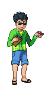

2× · pixelated
Welcome to Tandor! Ask me about a route, a gym or what changed in the latest patch.
What changed with Exp All in 1.4.0?
The 2026 patch notes place Exp All on the Route 4→10 path, and 1.4.0b fixed an issue with it. Check the PokéPod's ITEMS tab for the spot. SAMPLE REPLYSource: 2026 Patch Notes · pokemon-uranium.fandom.com
Who leads the Nowtoch Gym?
I'm still double-checking the leader list against the wiki, so I won't guess yet. SAMPLE REPLY
Route 1 wild listPatch 1.4.1Nuclear Plant Zeta